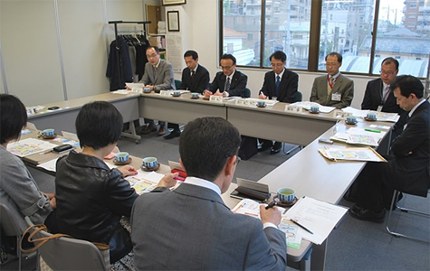

|
|
4月20日(月)14時30分より、埼玉県生協連・会議室にて埼玉県食品安全局と消費者団体との懇談会が開催され、埼玉県食品安全局より7人、消費者団体より7人が出席しました。  1．挨拶 はじめに、埼玉県食品安全局の森尾様より｢食に関することは生活の基盤であり、安心・安全には感心が高く、県民アンケートでもいつも上位にきています。今年は教育現場と一緒にリスクコミュニケーションをすすめています。本日は、消費者の皆さんの直接の話ができる大切な場です。ご意見をうかがいたいと思います。続いて、岩岡埼玉消団連代表幹事より、埼玉消団連では食の安全について年間5回ほど、行政の皆さんとの懇談を行っています。消費者も食の安全について正しい理解をした上で、ディスカッションすることが大切だと思っています。新たな機能性表示、食品表示について更に学んでいきたいと考えています。 2．懇談テーマに関する説明 （1）埼玉県がすすめるS－GAP(埼玉版正しい農業経営を実践する取り組み) 策定にいたる経緯と今後の課題を中心に報告されました。この取り組みをすすめていくためには｢消費者の評価から始まる好循環｣をつくり推進していきます。 （2）2015年度埼玉県食品衛生監視指導計画 今年12月～1月にかけて計画への意見募集を経て作成された｢埼玉県食品衛生監視指導計画の概要｣について報告されました。発生すると被害が大きい給食施設への指導を充実させ、発生を減少させたことなど前年度の取り組みを評価しながら作成してきた事などの説明がありました。 3．報告・説明を受けた質疑応答と懇談(抜粋) ○G-GAPを取得するのは大変です｡S-GAPも認証を行うのですか｡また、認証の方法は →S-GAPのやらなければいけないことをリスト化してチェックする取り組みについて認証が必要なのか検討しています。実際にはS-GAPに取り組めばG-GAPの7割～8割の要件を満たすことができる現状です。 ○静岡県において、今年度から食に関する不安に関してワンスットプで電話を受ける窓口が設置されました。食の安全では全国のトップランナーとして取り組んできた埼玉県においても、検討ください。 →いまでも、食に関する不安やご指摘は、ワンストップで受け止めることを基本としています。静岡県の取り組みは確認してみます。 |